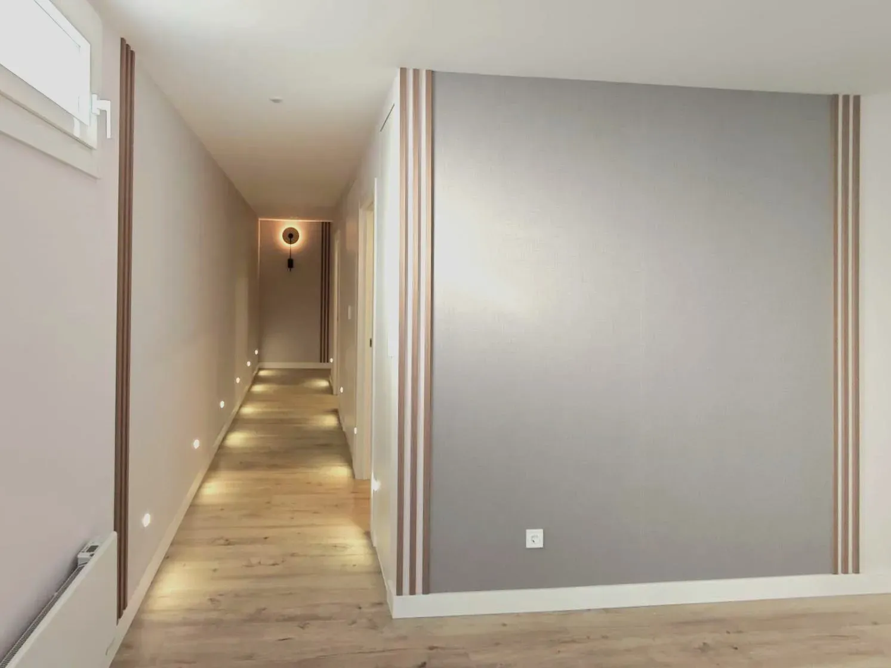
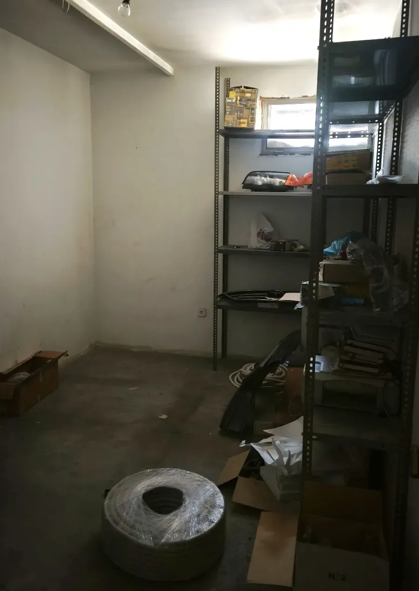
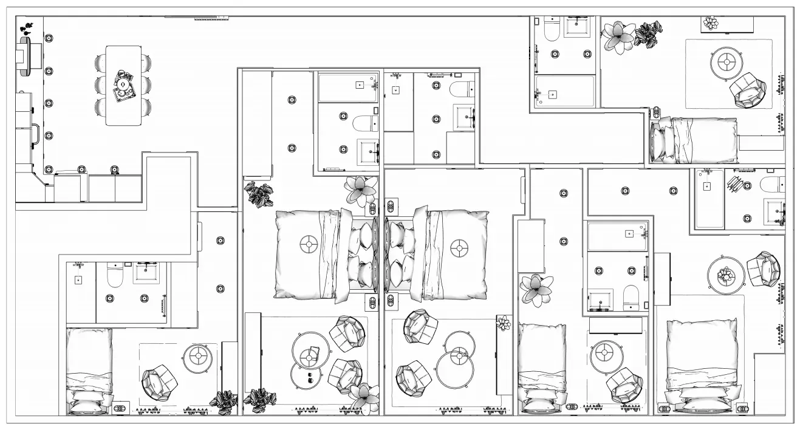
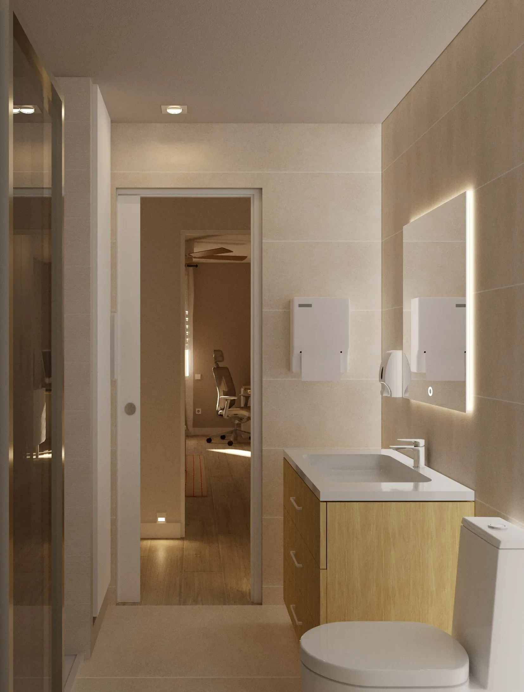
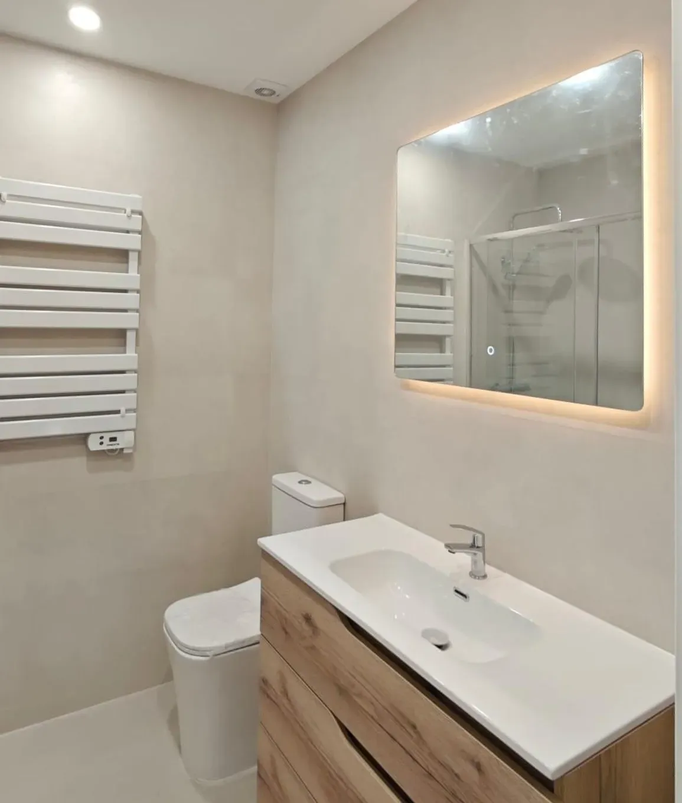

Transformación de Local · Madrid
Transformación de local con desarrollo en dos fases (coliving → oficinas), abordada como colaboración entre arquitecto y constructora. Se recogen criterios que afectan a coordinación y resultado: zonificación, continuidad material, iluminación y puntos críticos de remate.
Contexto
Punto de partida no residencial y evolución del encargo durante obra.
El proyecto parte de un espacio de origen no residencial y requiere construir una lectura clara: jerarquía de recorridos, proporción y control de luz. El interiorismo se desarrolla en coordinación con arquitecto y constructora, con un objetivo operativo: fijar criterios que reduzcan incertidumbre en ejecución (materiales, iluminación y remates) y eviten “parches” de última hora.
Estado inicial
Registro del punto de partida antes de la intervención.

Fase 1 · Coliving
Criterio residencial: recorrido, escala doméstica y repetición controlada en dormitorios.
La documentación gráfica fija la zonificación, anchos de paso, posiciones de piezas y lógica de amueblamiento, con especial atención a repetición y control (dormitorios/baños) para simplificar coordinación.


El recorrido se utiliza como herramienta de orden: pasillo como eje, luz controlada y continuidad de materialidad. Esto permite mantener una lectura serena incluso con un programa exigente.

La cocina se plantea como pieza de uso diario integrada en el conjunto: base neutra, lectura limpia y puntos de luz que garantizan funcionalidad sin sobrecargar.

En dormitorios se prioriza implantación repetible y controlada: capacidad, orden y lectura limpia de paramentos para evitar saturación.

En zona de día se ajusta proporción y orientación de luz natural para una estancia calmada y funcional, con mobiliario contenido.
Fase 2 · Oficinas
Redistribución posterior: compartimentación, densidad de puestos y soporte de instalaciones.
Tras el cambio de uso, el criterio se traslada a una redistribución de trabajo: geometrías claras, particiones legibles y puntos críticos de instalaciones previstos para coordinar carpinterías, luminarias y remates.

En despachos simples se comprueba la relación entre profundidad, iluminación y mobiliario, manteniendo densidad contenida.

En despachos dobles se valida control de densidad y claridad de uso, priorizando lectura sobria y remates limpios.
El baño se define con la misma lógica que el conjunto: claridad, luz controlada y continuidad material, con atención específica a puntos críticos (encuentros, alineaciones y remates).

Resultado
Validación en ejecución: coherencia de luz y materialidad respecto a la intención.
El resultado real confirma la consistencia del criterio: lectura limpia, iluminación controlada y materialidad sobria. La comparativa permite verificar que las decisiones proyectadas son ejecutables y trasladables a obra sin distorsión.


{kind=link}
{kind=link}
{kind=link}
{kind=link}
{kind=link}